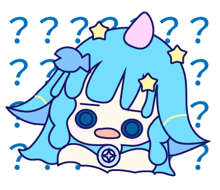
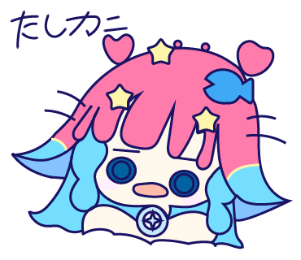
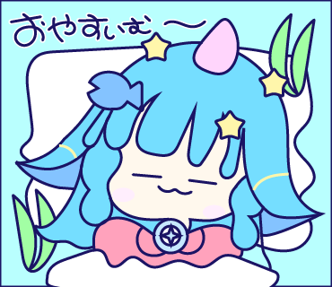
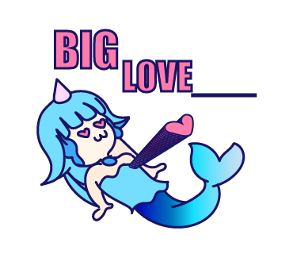
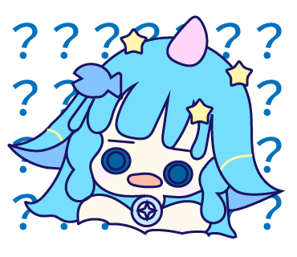
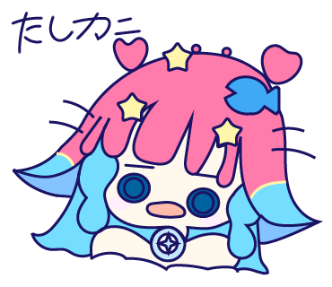
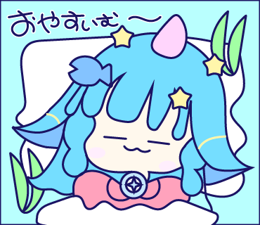
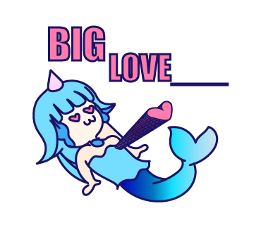
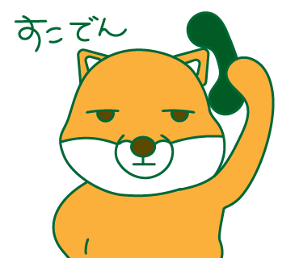
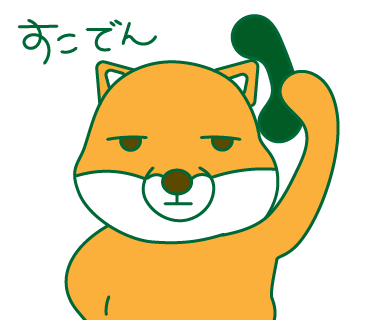

Kana Uchida’s portfolio

ラインスタンプ かわいい魚
オリジナルキャラクターを用いたLINEスタンプを制作しました。
本作品は、職業訓練校の授業で学んだ内容を活かしながら、
Illustratorを初めて使用して制作したスタンプ作品です。
日常会話で使いやすい言葉や感情表現を中心に、
「ちょっとした気持ちをやさしく伝えられる」スタンプになるよう意識しました。
小さなサイズでも感情が伝わること・視認性の高さを大切に制作しています。
ギャラリー
 







 
